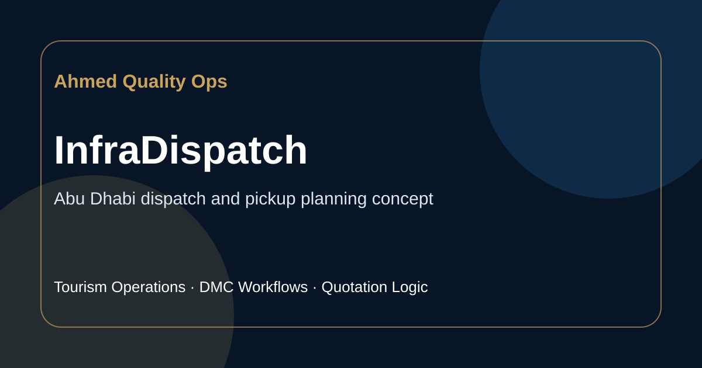
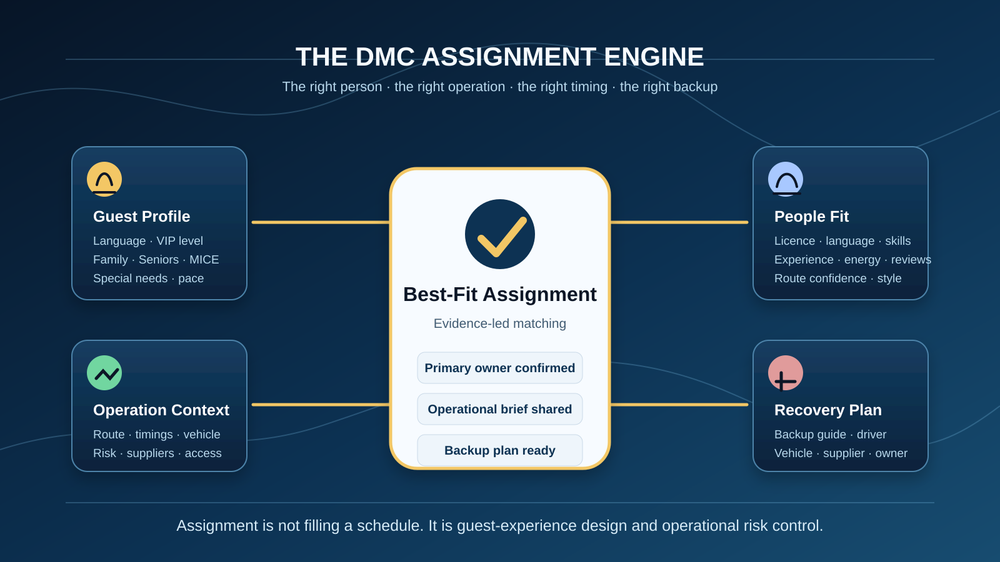
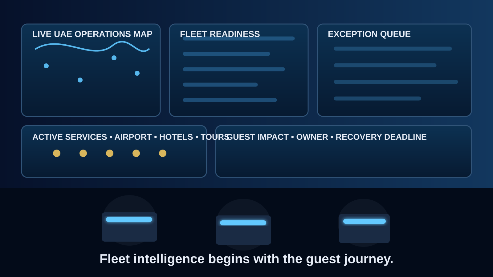
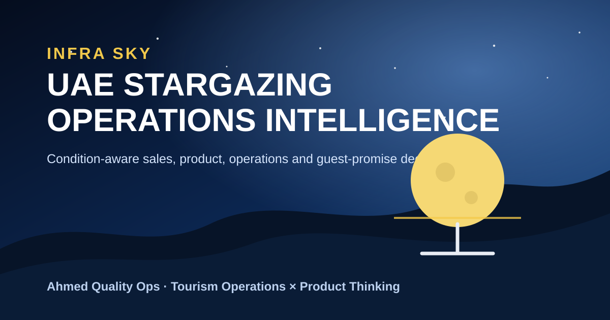
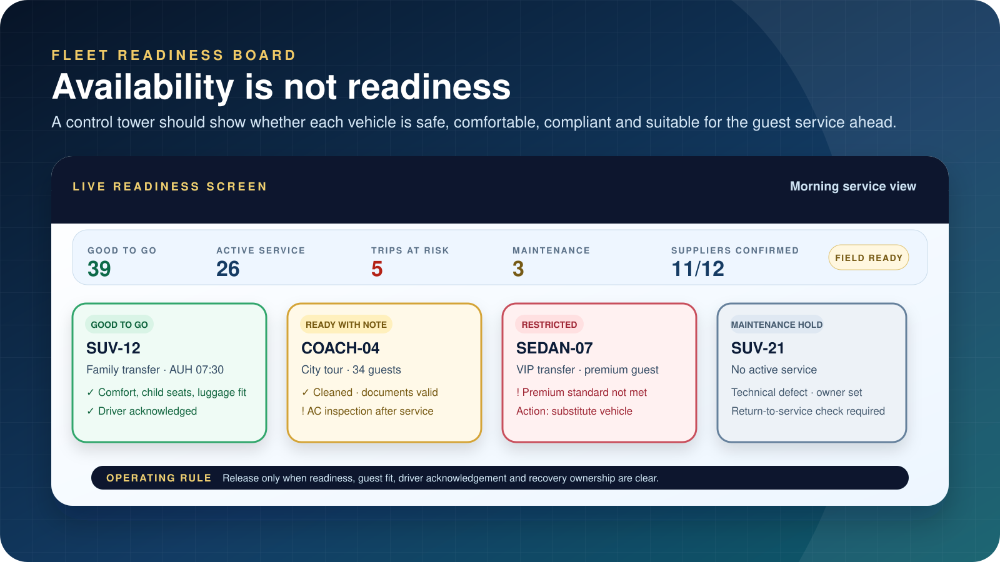
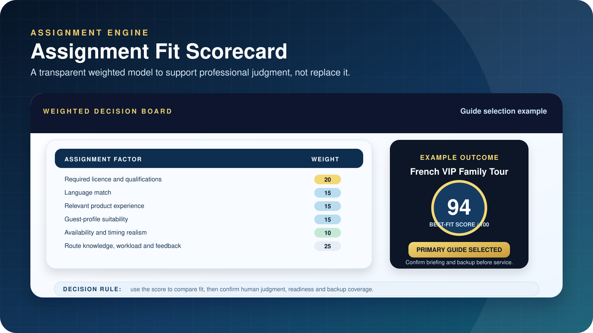
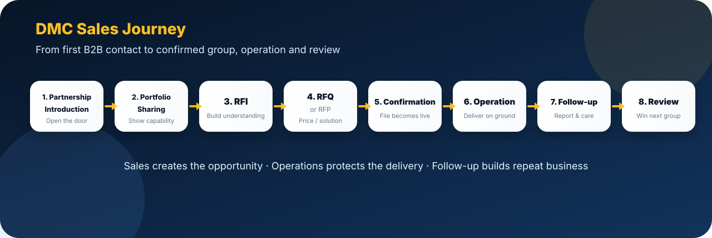

Flagship active project
InfraDispatch
Smart rule-based dispatch planner/demo for pickup sequencing, team briefing outputs, and operational decision support.
A creative portfolio direction for Ahmed Mahmoud: part executive profile, part product lab, part field manual for DMC operations, dispatch planning, guide quality, and commercially safer tour workflows.
This concept replaces ordinary cards with a visual wall. Each tile behaves like a chapter cover: status first, problem/solution second, then deeper case study navigation. It is more memorable while still staying professional.

Smart rule-based dispatch planner/demo for pickup sequencing, team briefing outputs, and operational decision support.

Thinking system for matching the right guide, driver, capability, and service context.

Dashboard-oriented view of readiness, exceptions, risk, and manager attention.

Condition-aware planner for UAE stargazing tour readiness and guest expectation control.

Quotation workflow for net cost, margin, VAT, transport, tickets, gratuities, and break-even risk.
Instead of a simple project description, each case study shows the system: context, workflow, decisions, outputs, boundaries, and what would be required to make it production-grade.

Use this layout to present InfraDispatch as Ahmed's flagship active project while staying accurate: a static frontend demo with rule-based logic, not a full live production platform.
The insights section should feel like an operations field journal, not a generic blog. Categories become proof of judgment: market intelligence, control tower thinking, guide quality, sales workflows, and quotation logic.
What operations managers should see on one screen when readiness, exceptions, and service risk matter.
Published · Operations playbook
How DMC teams can think through right person, right operation, right guest expectation.
Published · Service quality
A practical sales scenario showing the path from partnership signal to confirmed group movement.
Published · Sales workflow
How net cost, selling price, markup, margin, VAT, transport, and break-even risk fit together.
Published · Commercial clarityThis concept is intentionally more distinctive than the first mockup: floating mobile nav, cinematic project wall, full-bleed hero, editorial insights desk, and stronger use of existing visual assets.
Full hero split, 4-proof strip, masonry-style portfolio wall, case study split view, editorial insight board.
Hero stacks, project wall moves to two columns, case sidebar drops under the feature case study.
Single-column flow, bottom nav wraps, portrait and proof blocks remain readable, no crowded sections.
InfraDispatch stays a smart rule-based demo. Static/mock boundaries remain explicit and recruiter-safe.